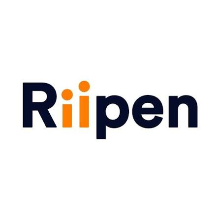
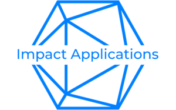
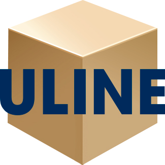

Computer Engineering student building across the stack — from VHDL and FPGA datapaths up to full-stack applications. I like problems where the hardware and the software have to agree with each other.
I'm a Computer Engineering student at the University of Guelph, drawn to the layer where digital logic meets real software — designing an ALU in VHDL one term, shipping a full-stack app the next.
This site collects the projects, coursework, and hands-on work behind that — hardware builds, software systems, and a hackathon build in between.


